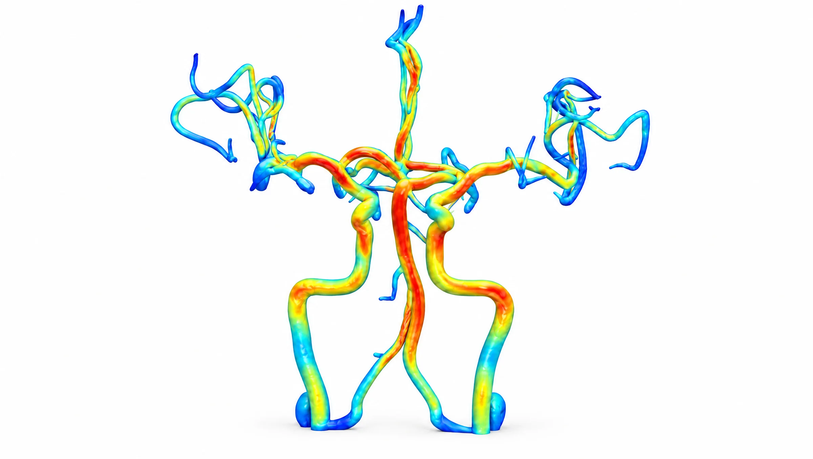
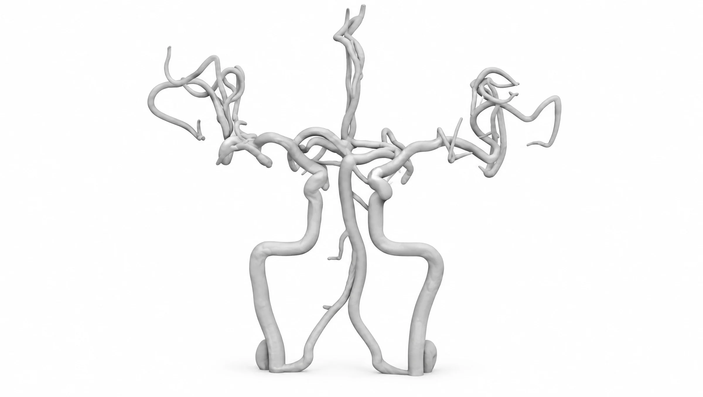
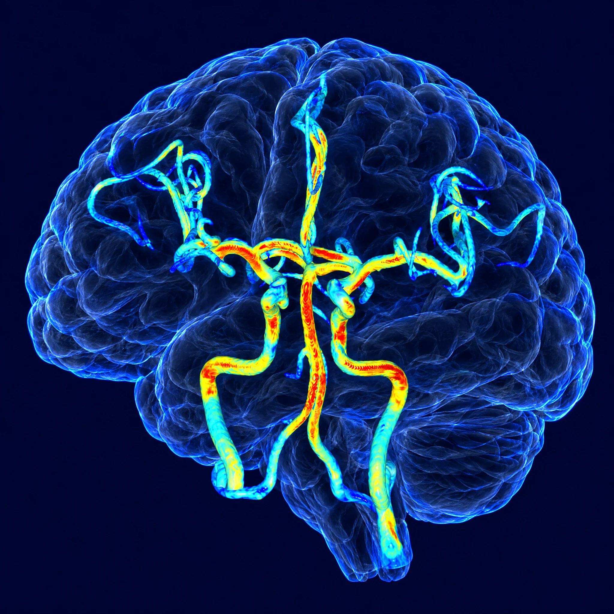

FOR CLINICIANS의료진 · 병원
의료진에게 —
판독에 정량 근거를
- 정량 근거
- 직관적인 환자 설명
- 정기 추적 관리
FDA 510(k) Cleared · K240385 — 식약처 의료기기 인증 · 제인 23-4077호
뇌혈관을, 색과 숫자로.
NeuFlow는 TOF-MRA 한 번으로 뇌혈관을 3D 컬러와 SIG 수치로 분석하는 소프트웨어입니다. 추가 촬영도, 조영제도 필요 없습니다.
SIGNAL INTENSITY GRADIENT
NO CONTRAST · NO EXTRA SCAN
PROCESS — 01 / 05
기존에 촬영한 MRA 영상을 그대로 사용합니다. 추가 촬영도, 조영제도 필요 없습니다.

자동 분할로 3차원 혈관 구조를 생성합니다. 흑백 단면이 입체가 됩니다.

혈류역학 데이터를 색으로 시각화합니다. 파랑에서 빨강까지, 혈관벽이 받는 힘의 분포가 드러납니다.

관심 혈관의 지름·길이·SIG 수치를 측정합니다. 보이는 것이 숫자가 됩니다.

환자 설명용 리포트를 자동으로 생성합니다. 환자가 이해하는 한 장입니다.


SIG(Signal Intensity Gradient)는 혈관벽 전단응력의 대리 지표입니다. VINT 엔진이 TOF-MRA 신호만으로 계산해, 혈관벽 위에 색과 숫자로 올려놓습니다.
전체 혈관과 선택한 혈관의 혈류역학 특성이 수치로 정리됩니다. 판독에 필요한 근거가 한 화면에 모입니다.
조영제 없이, 이미 촬영한 TOF-MRA 신호만으로 계산됩니다.
2D 흑백 MRA가 놓치던 혈관벽의 혈류역학 정보를, 색과 숫자로 정량화합니다. 손잡이를 좌우로 움직여 보세요.





MOYAMOYA모야모야병 환자의 TOF-MRA에서 SIG를 측정해, 질환의 진행과 혈관벽 혈류역학 지표의 관계를 분석한 연구입니다.
 ISCHEMIC STROKE
ISCHEMIC STROKE뇌경색 환자에서 SIG와 예후 사이의 관계를 살펴, 정량 지표가 추적 관찰에 줄 수 있는 근거를 다룬 연구입니다.
ANEURYSM뇌동맥류와 혈관벽 혈류역학 지표의 관련성을 분석해, 영상 판독에 더할 수 있는 정량 정보를 제시한 연구입니다.
“MRA의 PET을 보는 것 같습니다. 컬러로 보는 즉시 확인이 되고 확신이 섭니다.”
“이제 뇌혈관을 컬러와 숫자로 볼 수 있습니다.”
“뉴플로우로 판독한다는 소문을 듣고 환자분들이 먼저 찾아오십니다.”
TRUSTED BY — 함께하는 병원


이미 찍은 MRA 한 번이면 충분합니다.
도입부터 PACS 연동까지 함께 안내해 드립니다.